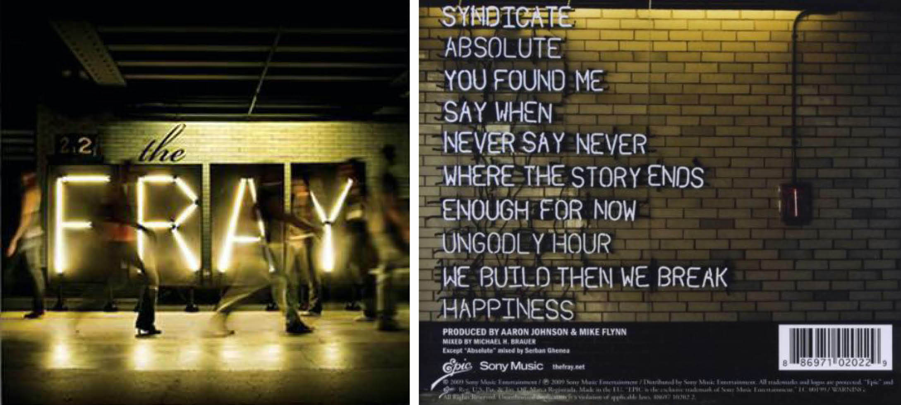

Happiness is an interactive website the uses CSS animations and typography to visualize lyrics to my personal favorite song, "Happiness" by The Fray. The lyrics consitently repeat the word "happiness" and personifies it with each stanza. The site plays on this poetic system by literally altering the letters of the word to illustrate the charateristics it is given in the song.


The challenge in the creation of this project was that I wanted to create all of these complex animations strictly with HTML and CSS, no JavaScript. Much of the process in the coding this website was understanding the limitations and possibilities of CSS animations and how best I could implement them to illustrate the lyrics of my chosen song. Lastly, The website went through many color changes along the way without clear direction, but ended up with a neon sign font with bright yellow, glowing letters on a dark background to emulate the album cover the song "Happiness" appears on.

first draft

second draft

third draft
The Fray's second studio album The Fray where "Happiness" appears